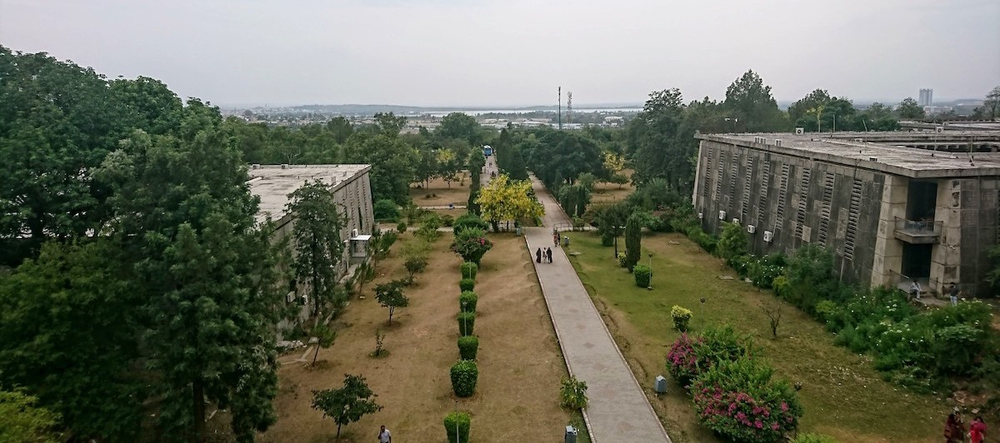
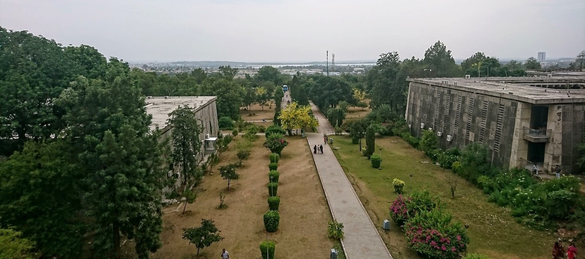

QAU CS DEPARTMENT
- Quaid-i-Azam University in "Computer Science and Information Systems" ranked 301-350 worldwide and third nationally by QS Rankings 2025
- Seminar on Entrepreneurial and Growth Dynamics in the Tech Landscape by Usman Asif, CEO, DevSinc
- CS Alumni Annual Event 2024 was held on Feb 25, 2024 in Islamabad Club
- QAU Orientation Booklet 2023-2024 has been published
- Students from CS Dept got first positions in On Spot Programming and Hackathon competitions in the 8th ExcITe Cup organized by CUST, Islamabad
History:
The Department of Computer Science at Quaid-i-Azam University was established in 1976, making it one of the earliest institutions in Pakistan to offer education and research in the field of computing. Initially launched as the Institute of Information Technology, it evolved over the decades in response to the rapidly growing global demand for computing professionals and researchers. In 2001, the institute was upgraded to a full-fledged department under the Faculty of Natural Sciences. Since then, the department has significantly expanded its academic and research programs, offering BS, MPhil, and PhD degrees in Computer Science. With a strong emphasis on research and innovation, the department has developed strengths in areas such as artificial intelligence, networking, data science, software engineering, and human-computer interaction. The QAU CS Department continues to maintain a tradition of academic excellence, contributing to national development and producing graduates who excel in both academia and industry around the world.
Introduction:
The Department of Computer Sciences at Quaid-i-Azam University is considered as one of the best computer science departments in Pakistan. The department is ranked among the top 3 departments in the country as per QS and Times Higher Education (THE) rankings. It was established at Quaid-i-Azam University Islamabad in 1976. The main objective of the department is to produce Computer Scientists in order to meet the growing demand for computer professionals in the country. All the programs have been highly successful. Department graduates have attained higher degrees from developed countries and are working in national and international organizations. The department offers PhD (Computer Science), MPhil (Computer Science), MS (Information Science & Technology), MS (Data Science), and BS (Computer Science) degrees. Each degree program has a specific objective and focus. The course of study and syllabus for each degree is updated and is inline with its objectives.
 



Forging future tech leaders since its inception in 1976, the Computer Science Department at Quaid-i-Azam University stands as a cornerstone of computing education in Pakistan. Beyond mere instruction, the department cultivates a dynamic ecosystem where innovation thrives and intellectual curiosity is ignited. Nationally recognized amongst the top three by esteemed rankings like QS and THE, QAU CS empowers graduates to not only meet but exceed the demands of a rapidly evolving digital world. Our alumni, equipped with a robust foundation and a forward-thinking mindset, are making significant contributions across global industries and leading research institutions. Offering a comprehensive suite of programs, including BS, MS, MPhil, and PhD, each curriculum is meticulously designed to be relevant, challenging, and aligned with contemporary advancements, ensuring our graduates are at the forefront of technological progress."
Programs:
- PhD (Computer Science)
- MPhil (Computer Science)
- MS (Information Science & Technology)
- MS (Data Science)
- BS (Computer Science)
Important Documents
- Human Information Interaction Investigates all aspects of information usage by humans. Research focus varies for information seeking behavior, Information Interaction Techniques, Storage and Retrieval models/frameworks for structured and unstructured information, and information services for human information needs
- Knowledge Engineering Focuses on analyze of data, metadata and knowledge using supervised and unsupervised mining algorithms. The target areas will be software architecture, web services and overlay networks. The main goal is to process related and uncorrelated facts and extract meaningful contextual knowledge for quality decision making.
- Networking and Communication This group investigates the applied aspects in the domains of networking, communication, security and privacy. The research group focuses on a number of areas including but not limited to computer networks, distributed systems, mobile Agent-based distributed systems, routing protocols, peer-to-peer computing, security and privacy.